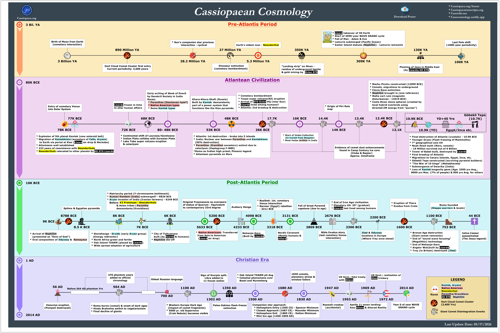

backgrounds
Christian Era
Atlantean Civilization
Cassiopaea
LEGEND
Oort Cloud Comet Cluster
(3,600 Yrs)
Giant Comet Disintegration Events
Races
Kantek, Aryans
Native American
Neanderthal
Parantha/Dravidians
4D STS Nephilim
80K BCE
Cassiopaean Cosmology
RightBar
bottom bar
LeftBar
Cassiopaea.org
1 AD
2014 AD
Last Update Date: 05/17/2026
* Cassiopaeatranscripts.org
* Casswiki.net
* Casscosmology.netlify.app
* Cassiopaea.org/forum
P1
P2
Post-Atlantis Period
G1
G2
10K BCE
pink1
pink2
pink3
Pre-Atlantis Period
O2
O1
3 Bil. YA
christianEraGroup
Vesuvius eruption
(Pompeii destroyed)
1350 AD
1953 AD
2014 AD
Before 564 AD phantom Yrs
564 AD
700 AD
US Govt.: fake treaty
with Aliens
Oldest Russian language
Paleo-Eskimo flash-freeze
extinction
* Rome burns (comet) & onset of dark ages
* Hindu Brahmins switch to vegetarianism
* Final decline of giants
Year 0 of new WAVE
GRAND cycle
56 AD
2nd dummy
470 phantom years
added to official
chronology
1100 AD
* Western Europe Dark Age
(Impact of comet fragments)
* 5000 yr. old Supernova
(Crab Nebula) becomes visible
1830 comets,
planetary stress &
window fallers
* Oak Island TDARM pit dug
* Celestial phenomena over
Basel and Nuremberg
US Govt.: realization of
Alien trickery
Roswell crashes
(accidental)
1500 AD
1830 AD
1947 AD
1972 AD
1302 AD
Sign of Scorpio split.
Libra added to
11-house zodiac
Companion star approach:
* Heliosphere Entry (1505 CE) - Spoerer Minimum
* Closest Approach (1687 CE) - Maunder Minimum
* Heliosphere Exit (1805 CE) - Dalton Minimum
* Mini Ice age (1450-1850 AD)
Apollo 11 moon landing:
Saw Aliens & Altered Reality
1969 AD
1680 AD
AtlantisPeriodGroup
10K BCE Period
* Continental shift of Laurasia/Gondwana
* Indian Plate collides with Eurasian Plate
* Lake Toba super volcano eruption
& cataclysm
* Machu Picchu constructed (12009 BCE)
* Comets, migrations to underground
* Clovis Race extinction
* Nephilim brought in (one reference)
* Malta cart ruts (magnetic
disturbances - 12019 BCE)
* Costa Rican stone spheres (created by
local hybrid overlords using
directed EM energy from "purses")
* Final destruction of Atlantis (crystals) - 10.9K BCE
* Younger Dryas (Flash freezing of Mammoths)
* 7° geographical axis tilt
* Noah flood myth (Mars, comets)
- 19 Million survived out of 6 Billion
* Tower of Babel built, destroyed by Lizards
* Final breakup of Atlantis
* Migrations to Canary Islands, Egypt, Inca, etc.
* Göbekli Tepe constructed (surviving pyramid builders)
* "The War of 10 kings" (Mahabharata)
* Submergence of Dwarika (India)
* Loss of Kantek longevity gene (Age: 2500 yrs Avg.,
8000 yrs Max. (7% of people) & 800 yrs Avg. for others
* Cometary bombardment
* Taupo super volcano(NZ) eruption
* Arrival of STS Orion HQ (near Sun)
* Lizards lived among humans?
* Atlantis: 2nd breakup & destruction
* Atlantis: 1st destruction - broke into 5 islands
* India: Nuclear war between Paranthas and Kantekkians
(50% destruction)
* Paranthas (Dravidian ancestors) extinct due to
cataclysm (Haplogroup F-M89)
*Rama as Indian high priest; Phoenix legend
* Atlantean pyramids on Mars
Egypt/Inca etc.
YD+40 Yrs
10.9K (YD)
12.4K BCE
16K BCE
26K BCE
48K BCE
68K BCE
72K BCE
78K BCE
77K BCE
80- 48K BCE
Entry of cometary Venus
into Solar System
Early writing of Book of Enoch
by Sanskrit Society in India
Races:
* Paranthas (Denisovan type?)
* Native American types
* Some Kantek types